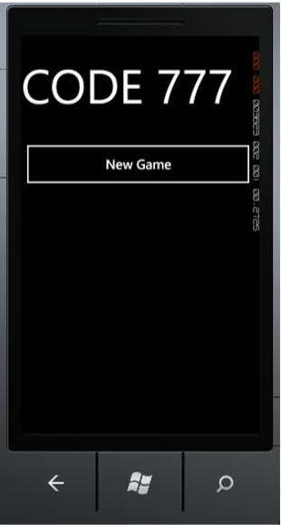
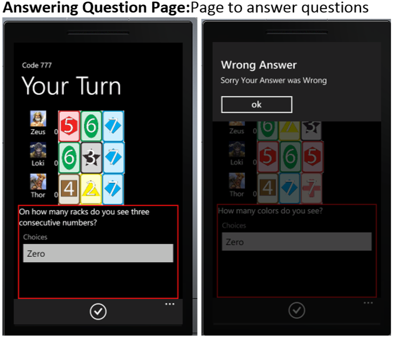
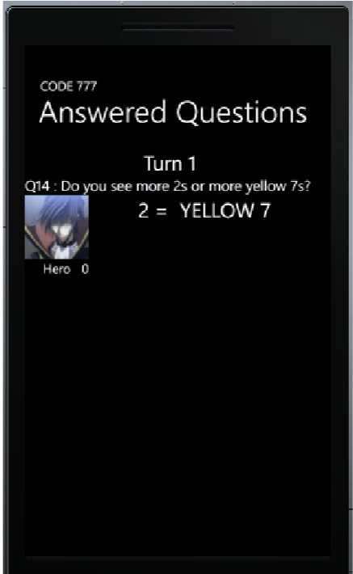
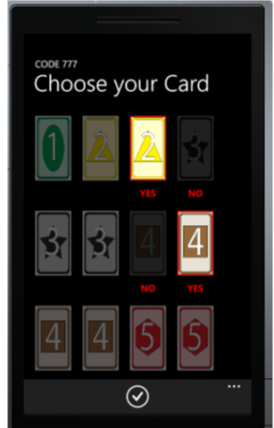

Game Info:
Code 777 is a logic deduction game created by Robert Abbott and Alex Randolph.
The games is played from 2-4 players. Each player is given a rack with 3 cards (a card has a color and a number). The player's own cards are not visible to them but to their opponent. Each turn, a player takes a question from the deck. A question might be like (on how many racks are there green cards?).
Prerequisites for running project
- Visual Studio 2010 and above
- Windows phone 7.5 and above
- Mvvm toolkit
Screenshots
Start Screen
When app is opened. Press New game to start

Main Screen
After New Game, this screen shows the players, their cards. When a question is answered, it show on the bottom. The page also has white buttons on the bottom corresponding to other screens

Answering Question Page
Page to answer questions

Questions Answered Page
List of questions answered

Guess Cards Page
Page where you can guess card. If you have three cards with state yes, then if you press the guess button, the program will check your guess 
Notes Page
Button to create and delete Note. Click the create note, will take you to a page to select note.